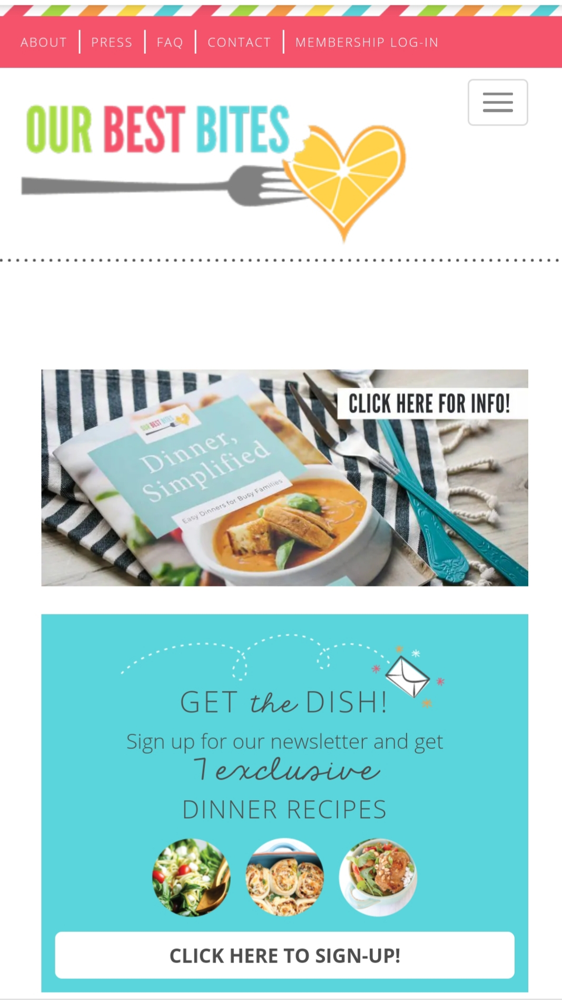
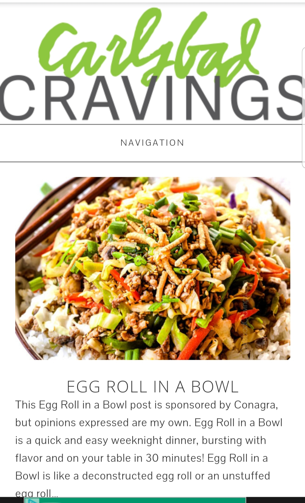
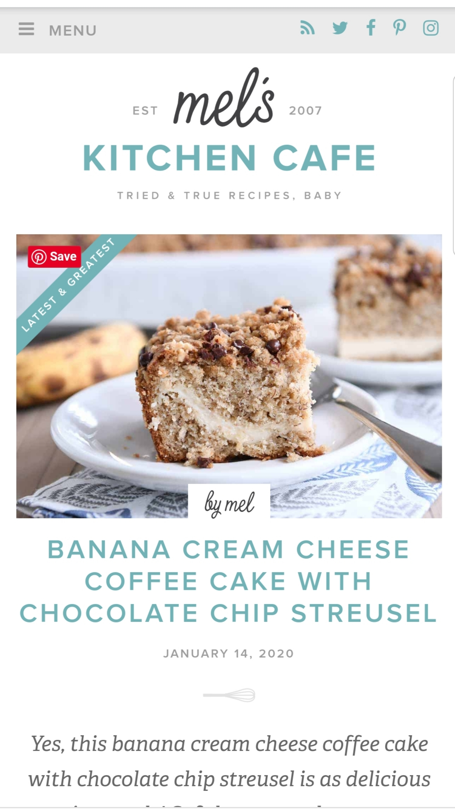

Alignment
Our Best Bites
ourbestbites.com I chose this website because I felt like it is a good example of alignment. Everything, including the header, logo, and pictures seem to all be be aligned to the left. They made all of the spacing between pictures and items in the header equal. Even the menu box lines up with the pictures.
Contrast
Carlsbad Cravings
carlsbadcravings.com This website is a good example for contrast. I really liked the simplicity of the bold colors of the food against the white background. This tells me that the food is the most important thing on the page. The only other use of bold color is the title of the website(blog) which makes it really stand out and is more memorable.
Repetition
Mel's Kitchen Cafe
melskitchencafe.com There are a few things on this website that show good use of repetition. First the name Mel is in a different font and so listing it in multiple places tells me that it is important and should be remembered. She also used the same color of blue and fonts that help it feel cohesive.